You're in Control: System Center and Forefront Security
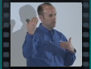
Speaker(s): Eric Berg, Jeff Wettlaufer
Implementing Core Infrastructure Optimisation
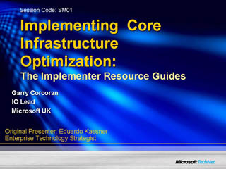
Speaker(s): Garry Corcoran
System Center Essentials 2007: Overview and Architecture
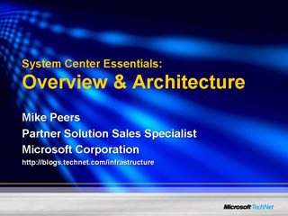
Speaker(s): Mike Peers
System Center Operations Manager 2007: Technical Overview
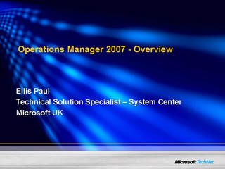
Speaker(s): Ellis Paul
Understanding Microsoft's Forefront Security Solution for Businesses
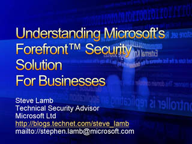
Speaker(s): Stephen Lamb
Microsoft Softgrid: Creating Software as a Service
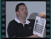
Speaker(s): Paul Butterworth
System Center Operations Manager 2007: Deployment Planning and Best Practices
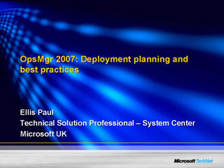
Speaker(s): Ellis Paul
Managing Forefront Client Security In-Depth using MOM Technology
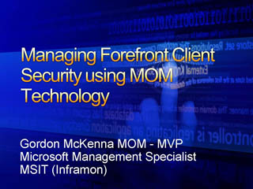
Speaker(s): Gordon McKenna
Systems Center Service Manager overview
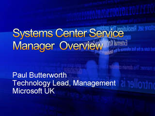
Speaker(s): Paul Butterworth
System Center Configuration Manager 2007: Technical Overview
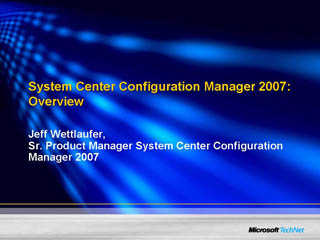
Speaker(s): Jeff Wettlaufer
Windows Server Virtualisation - Solution Scenarios
Speaker(s): David Hitchen
Managing Systems with Windows Powershell
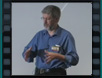
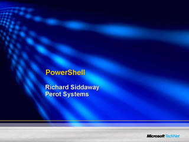
Speaker(s): Richard Siddaway
System Center Configuration Manager: Deploying Windows in the Enterprise
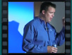
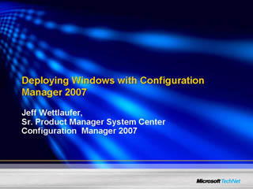
Speaker(s): Jeff Wettlaufer
System Center Virtual Machine Manager
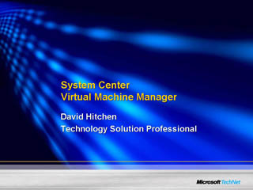
Speaker(s): David Hitchen